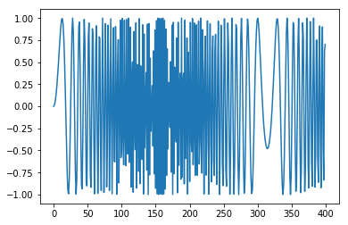
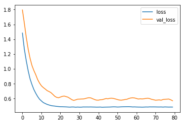
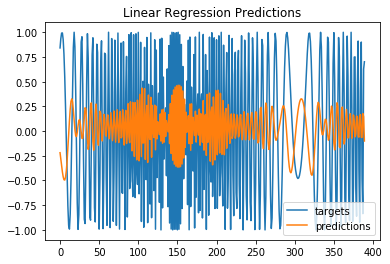
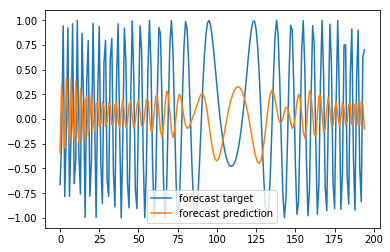
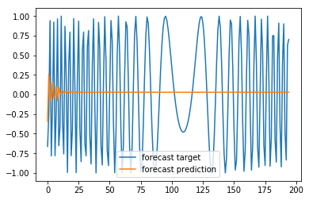
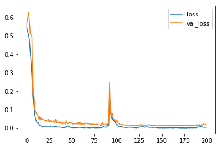
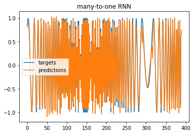
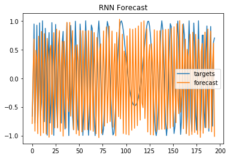

TF2 0 LSTM Nonlinear
================ by Jawad Haider
LSTM Nonlinear¶
# Install TensorFlow
# !pip install -q tensorflow-gpu==2.0.0-beta1
try:
%tensorflow_version 2.x # Colab only.
except Exception:
pass
import tensorflow as tf
print(tf.__version__)
|████████████████████████████████| 348.9MB 56kB/s
|████████████████████████████████| 501kB 40.2MB/s
|████████████████████████████████| 3.1MB 30.3MB/s
2.0.0-beta1
from tensorflow.keras.layers import Input, SimpleRNN, GRU, LSTM, Dense, Flatten
from tensorflow.keras.models import Model
from tensorflow.keras.optimizers import SGD, Adam
import numpy as np
import pandas as pd
import matplotlib.pyplot as plt
This is a time series of the form:
\[ x(t) = \sin(\omega t^2) \]

### build the dataset
# let's see if we can use T past values to predict the next value
T = 10
D = 1
X = []
Y = []
for t in range(len(series) - T):
x = series[t:t+T]
X.append(x)
y = series[t+T]
Y.append(y)
X = np.array(X).reshape(-1, T) # make it N x T
Y = np.array(Y)
N = len(X)
print("X.shape", X.shape, "Y.shape", Y.shape)
X.shape (390, 10) Y.shape (390,)
### try autoregressive linear model
i = Input(shape=(T,))
x = Dense(1)(i)
model = Model(i, x)
model.compile(
loss='mse',
optimizer=Adam(lr=0.01),
)
# train the RNN
r = model.fit(
X[:-N//2], Y[:-N//2],
epochs=80,
validation_data=(X[-N//2:], Y[-N//2:]),
)
Train on 195 samples, validate on 195 samples
Epoch 1/80
195/195 [==============================] - 1s 4ms/sample - loss: 1.4840 - val_loss: 1.7948
Epoch 2/80
195/195 [==============================] - 0s 163us/sample - loss: 1.2677 - val_loss: 1.6177
Epoch 3/80
195/195 [==============================] - 0s 133us/sample - loss: 1.1125 - val_loss: 1.4296
Epoch 4/80
195/195 [==============================] - 0s 136us/sample - loss: 0.9785 - val_loss: 1.2705
Epoch 5/80
195/195 [==============================] - 0s 141us/sample - loss: 0.8676 - val_loss: 1.1453
Epoch 6/80
195/195 [==============================] - 0s 148us/sample - loss: 0.7908 - val_loss: 1.0479
Epoch 7/80
195/195 [==============================] - 0s 171us/sample - loss: 0.7244 - val_loss: 0.9804
Epoch 8/80
195/195 [==============================] - 0s 143us/sample - loss: 0.6734 - val_loss: 0.9236
Epoch 9/80
195/195 [==============================] - 0s 138us/sample - loss: 0.6292 - val_loss: 0.8579
Epoch 10/80
195/195 [==============================] - 0s 136us/sample - loss: 0.5930 - val_loss: 0.8104
Epoch 11/80
195/195 [==============================] - 0s 141us/sample - loss: 0.5689 - val_loss: 0.7731
Epoch 12/80
195/195 [==============================] - 0s 134us/sample - loss: 0.5469 - val_loss: 0.7495
Epoch 13/80
195/195 [==============================] - 0s 145us/sample - loss: 0.5344 - val_loss: 0.7297
Epoch 14/80
195/195 [==============================] - 0s 134us/sample - loss: 0.5224 - val_loss: 0.7084
Epoch 15/80
195/195 [==============================] - 0s 133us/sample - loss: 0.5142 - val_loss: 0.6959
Epoch 16/80
195/195 [==============================] - 0s 153us/sample - loss: 0.5071 - val_loss: 0.6815
Epoch 17/80
195/195 [==============================] - 0s 144us/sample - loss: 0.5022 - val_loss: 0.6578
Epoch 18/80
195/195 [==============================] - 0s 132us/sample - loss: 0.4998 - val_loss: 0.6325
Epoch 19/80
195/195 [==============================] - 0s 136us/sample - loss: 0.4957 - val_loss: 0.6174
Epoch 20/80
195/195 [==============================] - 0s 136us/sample - loss: 0.4933 - val_loss: 0.6121
Epoch 21/80
195/195 [==============================] - 0s 137us/sample - loss: 0.4913 - val_loss: 0.6212
Epoch 22/80
195/195 [==============================] - 0s 135us/sample - loss: 0.4910 - val_loss: 0.6309
Epoch 23/80
195/195 [==============================] - 0s 137us/sample - loss: 0.4895 - val_loss: 0.6345
Epoch 24/80
195/195 [==============================] - 0s 135us/sample - loss: 0.4884 - val_loss: 0.6274
Epoch 25/80
195/195 [==============================] - 0s 139us/sample - loss: 0.4869 - val_loss: 0.6192
Epoch 26/80
195/195 [==============================] - 0s 142us/sample - loss: 0.4858 - val_loss: 0.6032
Epoch 27/80
195/195 [==============================] - 0s 170us/sample - loss: 0.4875 - val_loss: 0.5860
Epoch 28/80
195/195 [==============================] - 0s 154us/sample - loss: 0.4873 - val_loss: 0.5760
Epoch 29/80
195/195 [==============================] - 0s 155us/sample - loss: 0.4850 - val_loss: 0.5833
Epoch 30/80
195/195 [==============================] - 0s 146us/sample - loss: 0.4867 - val_loss: 0.5925
Epoch 31/80
195/195 [==============================] - 0s 150us/sample - loss: 0.4855 - val_loss: 0.5933
Epoch 32/80
195/195 [==============================] - 0s 168us/sample - loss: 0.4856 - val_loss: 0.5947
Epoch 33/80
195/195 [==============================] - 0s 170us/sample - loss: 0.4876 - val_loss: 0.5957
Epoch 34/80
195/195 [==============================] - 0s 161us/sample - loss: 0.4874 - val_loss: 0.6007
Epoch 35/80
195/195 [==============================] - 0s 152us/sample - loss: 0.4875 - val_loss: 0.6079
Epoch 36/80
195/195 [==============================] - 0s 162us/sample - loss: 0.4872 - val_loss: 0.6131
Epoch 37/80
195/195 [==============================] - 0s 161us/sample - loss: 0.4878 - val_loss: 0.6098
Epoch 38/80
195/195 [==============================] - 0s 169us/sample - loss: 0.4869 - val_loss: 0.5985
Epoch 39/80
195/195 [==============================] - 0s 177us/sample - loss: 0.4866 - val_loss: 0.5879
Epoch 40/80
195/195 [==============================] - 0s 214us/sample - loss: 0.4858 - val_loss: 0.5799
Epoch 41/80
195/195 [==============================] - 0s 171us/sample - loss: 0.4859 - val_loss: 0.5793
Epoch 42/80
195/195 [==============================] - 0s 137us/sample - loss: 0.4868 - val_loss: 0.5852
Epoch 43/80
195/195 [==============================] - 0s 137us/sample - loss: 0.4843 - val_loss: 0.5864
Epoch 44/80
195/195 [==============================] - 0s 148us/sample - loss: 0.4857 - val_loss: 0.5939
Epoch 45/80
195/195 [==============================] - 0s 150us/sample - loss: 0.4862 - val_loss: 0.6014
Epoch 46/80
195/195 [==============================] - 0s 151us/sample - loss: 0.4865 - val_loss: 0.5984
Epoch 47/80
195/195 [==============================] - 0s 158us/sample - loss: 0.4870 - val_loss: 0.6047
Epoch 48/80
195/195 [==============================] - 0s 153us/sample - loss: 0.4881 - val_loss: 0.6061
Epoch 49/80
195/195 [==============================] - 0s 140us/sample - loss: 0.4895 - val_loss: 0.6022
Epoch 50/80
195/195 [==============================] - 0s 151us/sample - loss: 0.4887 - val_loss: 0.5952
Epoch 51/80
195/195 [==============================] - 0s 150us/sample - loss: 0.4869 - val_loss: 0.5878
Epoch 52/80
195/195 [==============================] - 0s 147us/sample - loss: 0.4877 - val_loss: 0.5812
Epoch 53/80
195/195 [==============================] - 0s 152us/sample - loss: 0.4893 - val_loss: 0.5791
Epoch 54/80
195/195 [==============================] - 0s 142us/sample - loss: 0.4906 - val_loss: 0.5832
Epoch 55/80
195/195 [==============================] - 0s 135us/sample - loss: 0.4912 - val_loss: 0.5884
Epoch 56/80
195/195 [==============================] - 0s 150us/sample - loss: 0.4915 - val_loss: 0.5919
Epoch 57/80
195/195 [==============================] - 0s 155us/sample - loss: 0.4920 - val_loss: 0.6021
Epoch 58/80
195/195 [==============================] - 0s 151us/sample - loss: 0.4902 - val_loss: 0.6089
Epoch 59/80
195/195 [==============================] - 0s 150us/sample - loss: 0.4877 - val_loss: 0.6124
Epoch 60/80
195/195 [==============================] - 0s 165us/sample - loss: 0.4884 - val_loss: 0.6090
Epoch 61/80
195/195 [==============================] - 0s 146us/sample - loss: 0.4873 - val_loss: 0.6023
Epoch 62/80
195/195 [==============================] - 0s 145us/sample - loss: 0.4865 - val_loss: 0.5946
Epoch 63/80
195/195 [==============================] - 0s 166us/sample - loss: 0.4863 - val_loss: 0.5984
Epoch 64/80
195/195 [==============================] - 0s 153us/sample - loss: 0.4855 - val_loss: 0.5958
Epoch 65/80
195/195 [==============================] - 0s 236us/sample - loss: 0.4863 - val_loss: 0.5991
Epoch 66/80
195/195 [==============================] - 0s 205us/sample - loss: 0.4875 - val_loss: 0.6030
Epoch 67/80
195/195 [==============================] - 0s 140us/sample - loss: 0.4869 - val_loss: 0.6059
Epoch 68/80
195/195 [==============================] - 0s 154us/sample - loss: 0.4885 - val_loss: 0.6003
Epoch 69/80
195/195 [==============================] - 0s 148us/sample - loss: 0.4880 - val_loss: 0.5904
Epoch 70/80
195/195 [==============================] - 0s 149us/sample - loss: 0.4882 - val_loss: 0.5855
Epoch 71/80
195/195 [==============================] - 0s 191us/sample - loss: 0.4881 - val_loss: 0.5788
Epoch 72/80
195/195 [==============================] - 0s 140us/sample - loss: 0.4874 - val_loss: 0.5805
Epoch 73/80
195/195 [==============================] - 0s 167us/sample - loss: 0.4872 - val_loss: 0.5830
Epoch 74/80
195/195 [==============================] - 0s 175us/sample - loss: 0.4878 - val_loss: 0.5786
Epoch 75/80
195/195 [==============================] - 0s 157us/sample - loss: 0.4862 - val_loss: 0.5886
Epoch 76/80
195/195 [==============================] - 0s 152us/sample - loss: 0.4882 - val_loss: 0.5914
Epoch 77/80
195/195 [==============================] - 0s 146us/sample - loss: 0.4871 - val_loss: 0.5927
Epoch 78/80
195/195 [==============================] - 0s 164us/sample - loss: 0.4863 - val_loss: 0.5945
Epoch 79/80
195/195 [==============================] - 0s 170us/sample - loss: 0.4868 - val_loss: 0.5849
Epoch 80/80
195/195 [==============================] - 0s 180us/sample - loss: 0.4865 - val_loss: 0.5714
# Plot loss per iteration
import matplotlib.pyplot as plt
plt.plot(r.history['loss'], label='loss')
plt.plot(r.history['val_loss'], label='val_loss')
plt.legend()
<matplotlib.legend.Legend at 0x7f6da02ef048>

# One-step forecast using true targets
# Note: even the one-step forecast fails badly
outputs = model.predict(X)
print(outputs.shape)
predictions = outputs[:,0]
plt.plot(Y, label='targets')
plt.plot(predictions, label='predictions')
plt.title("Linear Regression Predictions")
plt.legend()
plt.show()
(390, 1)

# This is the code we had before - it does the same thing
# One-step forecast using true targets
validation_target = Y[-N//2:]
validation_predictions = []
# index of first validation input
i = -N//2
while len(validation_predictions) < len(validation_target):
p = model.predict(X[i].reshape(1, -1))[0,0] # 1x1 array -> scalar
i += 1
# update the predictions list
validation_predictions.append(p)
plt.plot(validation_target, label='forecast target')
plt.plot(validation_predictions, label='forecast prediction')
plt.legend()
<matplotlib.legend.Legend at 0x7f6da028afd0>

# Multi-step forecast
validation_target = Y[-N//2:]
validation_predictions = []
# first validation input
last_x = X[-N//2] # 1-D array of length T
while len(validation_predictions) < len(validation_target):
p = model.predict(last_x.reshape(1, -1))[0,0] # 1x1 array -> scalar
# update the predictions list
validation_predictions.append(p)
# make the new input
last_x = np.roll(last_x, -1)
last_x[-1] = p
plt.plot(validation_target, label='forecast target')
plt.plot(validation_predictions, label='forecast prediction')
plt.legend()
<matplotlib.legend.Legend at 0x7f6da0203e48>

### Now try RNN/LSTM model
X = X.reshape(-1, T, 1) # make it N x T x D
# make the RNN
i = Input(shape=(T, D))
x = LSTM(10)(i)
x = Dense(1)(x)
model = Model(i, x)
model.compile(
loss='mse',
optimizer=Adam(lr=0.05),
)
# train the RNN
r = model.fit(
X[:-N//2], Y[:-N//2],
batch_size=32,
epochs=200,
validation_data=(X[-N//2:], Y[-N//2:]),
)
Train on 195 samples, validate on 195 samples
Epoch 1/200
195/195 [==============================] - 3s 15ms/sample - loss: 0.5466 - val_loss: 0.5635
Epoch 2/200
195/195 [==============================] - 0s 287us/sample - loss: 0.5213 - val_loss: 0.5932
Epoch 3/200
195/195 [==============================] - 0s 258us/sample - loss: 0.5075 - val_loss: 0.6299
Epoch 4/200
195/195 [==============================] - 0s 251us/sample - loss: 0.4792 - val_loss: 0.5864
Epoch 5/200
195/195 [==============================] - 0s 263us/sample - loss: 0.4202 - val_loss: 0.5122
Epoch 6/200
195/195 [==============================] - 0s 308us/sample - loss: 0.3570 - val_loss: 0.5067
Epoch 7/200
195/195 [==============================] - 0s 264us/sample - loss: 0.2767 - val_loss: 0.4933
Epoch 8/200
195/195 [==============================] - 0s 259us/sample - loss: 0.1817 - val_loss: 0.1868
Epoch 9/200
195/195 [==============================] - 0s 262us/sample - loss: 0.1132 - val_loss: 0.1706
Epoch 10/200
195/195 [==============================] - 0s 254us/sample - loss: 0.0677 - val_loss: 0.0982
Epoch 11/200
195/195 [==============================] - 0s 286us/sample - loss: 0.0450 - val_loss: 0.0890
Epoch 12/200
195/195 [==============================] - 0s 245us/sample - loss: 0.0354 - val_loss: 0.0755
Epoch 13/200
195/195 [==============================] - 0s 262us/sample - loss: 0.0266 - val_loss: 0.0730
Epoch 14/200
195/195 [==============================] - 0s 259us/sample - loss: 0.0291 - val_loss: 0.0492
Epoch 15/200
195/195 [==============================] - 0s 269us/sample - loss: 0.0190 - val_loss: 0.0670
Epoch 16/200
195/195 [==============================] - 0s 285us/sample - loss: 0.0132 - val_loss: 0.0457
Epoch 17/200
195/195 [==============================] - 0s 273us/sample - loss: 0.0115 - val_loss: 0.0590
Epoch 18/200
195/195 [==============================] - 0s 272us/sample - loss: 0.0093 - val_loss: 0.0442
Epoch 19/200
195/195 [==============================] - 0s 254us/sample - loss: 0.0077 - val_loss: 0.0493
Epoch 20/200
195/195 [==============================] - 0s 277us/sample - loss: 0.0065 - val_loss: 0.0445
Epoch 21/200
195/195 [==============================] - 0s 276us/sample - loss: 0.0069 - val_loss: 0.0404
Epoch 22/200
195/195 [==============================] - 0s 273us/sample - loss: 0.0070 - val_loss: 0.0399
Epoch 23/200
195/195 [==============================] - 0s 258us/sample - loss: 0.0069 - val_loss: 0.0405
Epoch 24/200
195/195 [==============================] - 0s 252us/sample - loss: 0.0109 - val_loss: 0.0425
Epoch 25/200
195/195 [==============================] - 0s 294us/sample - loss: 0.0105 - val_loss: 0.0475
Epoch 26/200
195/195 [==============================] - 0s 258us/sample - loss: 0.0104 - val_loss: 0.0351
Epoch 27/200
195/195 [==============================] - 0s 250us/sample - loss: 0.0079 - val_loss: 0.0397
Epoch 28/200
195/195 [==============================] - 0s 264us/sample - loss: 0.0059 - val_loss: 0.0375
Epoch 29/200
195/195 [==============================] - 0s 280us/sample - loss: 0.0057 - val_loss: 0.0364
Epoch 30/200
195/195 [==============================] - 0s 344us/sample - loss: 0.0066 - val_loss: 0.0338
Epoch 31/200
195/195 [==============================] - 0s 269us/sample - loss: 0.0060 - val_loss: 0.0394
Epoch 32/200
195/195 [==============================] - 0s 257us/sample - loss: 0.0079 - val_loss: 0.0314
Epoch 33/200
195/195 [==============================] - 0s 253us/sample - loss: 0.0100 - val_loss: 0.0491
Epoch 34/200
195/195 [==============================] - 0s 277us/sample - loss: 0.0064 - val_loss: 0.0307
Epoch 35/200
195/195 [==============================] - 0s 259us/sample - loss: 0.0055 - val_loss: 0.0326
Epoch 36/200
195/195 [==============================] - 0s 260us/sample - loss: 0.0053 - val_loss: 0.0374
Epoch 37/200
195/195 [==============================] - 0s 267us/sample - loss: 0.0063 - val_loss: 0.0298
Epoch 38/200
195/195 [==============================] - 0s 253us/sample - loss: 0.0048 - val_loss: 0.0350
Epoch 39/200
195/195 [==============================] - 0s 264us/sample - loss: 0.0049 - val_loss: 0.0235
Epoch 40/200
195/195 [==============================] - 0s 289us/sample - loss: 0.0037 - val_loss: 0.0342
Epoch 41/200
195/195 [==============================] - 0s 247us/sample - loss: 0.0035 - val_loss: 0.0233
Epoch 42/200
195/195 [==============================] - 0s 262us/sample - loss: 0.0025 - val_loss: 0.0334
Epoch 43/200
195/195 [==============================] - 0s 244us/sample - loss: 0.0029 - val_loss: 0.0261
Epoch 44/200
195/195 [==============================] - 0s 297us/sample - loss: 0.0036 - val_loss: 0.0232
Epoch 45/200
195/195 [==============================] - 0s 250us/sample - loss: 0.0093 - val_loss: 0.0380
Epoch 46/200
195/195 [==============================] - 0s 262us/sample - loss: 0.0120 - val_loss: 0.0282
Epoch 47/200
195/195 [==============================] - 0s 272us/sample - loss: 0.0104 - val_loss: 0.0223
Epoch 48/200
195/195 [==============================] - 0s 272us/sample - loss: 0.0085 - val_loss: 0.0288
Epoch 49/200
195/195 [==============================] - 0s 250us/sample - loss: 0.0032 - val_loss: 0.0350
Epoch 50/200
195/195 [==============================] - 0s 248us/sample - loss: 0.0046 - val_loss: 0.0255
Epoch 51/200
195/195 [==============================] - 0s 264us/sample - loss: 0.0033 - val_loss: 0.0297
Epoch 52/200
195/195 [==============================] - 0s 268us/sample - loss: 0.0026 - val_loss: 0.0239
Epoch 53/200
195/195 [==============================] - 0s 262us/sample - loss: 0.0022 - val_loss: 0.0219
Epoch 54/200
195/195 [==============================] - 0s 256us/sample - loss: 0.0031 - val_loss: 0.0269
Epoch 55/200
195/195 [==============================] - 0s 285us/sample - loss: 0.0023 - val_loss: 0.0234
Epoch 56/200
195/195 [==============================] - 0s 256us/sample - loss: 0.0024 - val_loss: 0.0240
Epoch 57/200
195/195 [==============================] - 0s 266us/sample - loss: 0.0027 - val_loss: 0.0305
Epoch 58/200
195/195 [==============================] - 0s 276us/sample - loss: 0.0045 - val_loss: 0.0202
Epoch 59/200
195/195 [==============================] - 0s 261us/sample - loss: 0.0038 - val_loss: 0.0333
Epoch 60/200
195/195 [==============================] - 0s 285us/sample - loss: 0.0041 - val_loss: 0.0185
Epoch 61/200
195/195 [==============================] - 0s 275us/sample - loss: 0.0037 - val_loss: 0.0325
Epoch 62/200
195/195 [==============================] - 0s 243us/sample - loss: 0.0031 - val_loss: 0.0204
Epoch 63/200
195/195 [==============================] - 0s 297us/sample - loss: 0.0027 - val_loss: 0.0254
Epoch 64/200
195/195 [==============================] - 0s 272us/sample - loss: 0.0022 - val_loss: 0.0251
Epoch 65/200
195/195 [==============================] - 0s 260us/sample - loss: 0.0018 - val_loss: 0.0201
Epoch 66/200
195/195 [==============================] - 0s 262us/sample - loss: 0.0021 - val_loss: 0.0301
Epoch 67/200
195/195 [==============================] - 0s 252us/sample - loss: 0.0053 - val_loss: 0.0257
Epoch 68/200
195/195 [==============================] - 0s 249us/sample - loss: 0.0025 - val_loss: 0.0240
Epoch 69/200
195/195 [==============================] - 0s 253us/sample - loss: 0.0022 - val_loss: 0.0246
Epoch 70/200
195/195 [==============================] - 0s 250us/sample - loss: 0.0019 - val_loss: 0.0241
Epoch 71/200
195/195 [==============================] - 0s 267us/sample - loss: 0.0020 - val_loss: 0.0226
Epoch 72/200
195/195 [==============================] - 0s 276us/sample - loss: 0.0017 - val_loss: 0.0208
Epoch 73/200
195/195 [==============================] - 0s 271us/sample - loss: 0.0035 - val_loss: 0.0240
Epoch 74/200
195/195 [==============================] - 0s 260us/sample - loss: 0.0033 - val_loss: 0.0190
Epoch 75/200
195/195 [==============================] - 0s 244us/sample - loss: 0.0028 - val_loss: 0.0230
Epoch 76/200
195/195 [==============================] - 0s 253us/sample - loss: 0.0020 - val_loss: 0.0200
Epoch 77/200
195/195 [==============================] - 0s 254us/sample - loss: 0.0016 - val_loss: 0.0191
Epoch 78/200
195/195 [==============================] - 0s 257us/sample - loss: 0.0017 - val_loss: 0.0220
Epoch 79/200
195/195 [==============================] - 0s 302us/sample - loss: 0.0019 - val_loss: 0.0230
Epoch 80/200
195/195 [==============================] - 0s 261us/sample - loss: 0.0016 - val_loss: 0.0190
Epoch 81/200
195/195 [==============================] - 0s 252us/sample - loss: 0.0023 - val_loss: 0.0172
Epoch 82/200
195/195 [==============================] - 0s 299us/sample - loss: 0.0026 - val_loss: 0.0209
Epoch 83/200
195/195 [==============================] - 0s 261us/sample - loss: 0.0019 - val_loss: 0.0139
Epoch 84/200
195/195 [==============================] - 0s 261us/sample - loss: 0.0025 - val_loss: 0.0149
Epoch 85/200
195/195 [==============================] - 0s 259us/sample - loss: 0.0059 - val_loss: 0.0308
Epoch 86/200
195/195 [==============================] - 0s 248us/sample - loss: 0.0108 - val_loss: 0.0183
Epoch 87/200
195/195 [==============================] - 0s 251us/sample - loss: 0.0058 - val_loss: 0.0196
Epoch 88/200
195/195 [==============================] - 0s 256us/sample - loss: 0.0057 - val_loss: 0.0177
Epoch 89/200
195/195 [==============================] - 0s 264us/sample - loss: 0.0046 - val_loss: 0.0221
Epoch 90/200
195/195 [==============================] - 0s 253us/sample - loss: 0.0085 - val_loss: 0.0187
Epoch 91/200
195/195 [==============================] - 0s 267us/sample - loss: 0.0149 - val_loss: 0.0262
Epoch 92/200
195/195 [==============================] - 0s 257us/sample - loss: 0.0137 - val_loss: 0.0250
Epoch 93/200
195/195 [==============================] - 0s 261us/sample - loss: 0.1677 - val_loss: 0.2507
Epoch 94/200
195/195 [==============================] - 0s 243us/sample - loss: 0.1237 - val_loss: 0.0823
Epoch 95/200
195/195 [==============================] - 0s 260us/sample - loss: 0.0684 - val_loss: 0.0629
Epoch 96/200
195/195 [==============================] - 0s 237us/sample - loss: 0.0475 - val_loss: 0.0795
Epoch 97/200
195/195 [==============================] - 0s 260us/sample - loss: 0.0396 - val_loss: 0.0473
Epoch 98/200
195/195 [==============================] - 0s 254us/sample - loss: 0.0433 - val_loss: 0.0502
Epoch 99/200
195/195 [==============================] - 0s 257us/sample - loss: 0.0344 - val_loss: 0.0381
Epoch 100/200
195/195 [==============================] - 0s 255us/sample - loss: 0.0220 - val_loss: 0.0319
Epoch 101/200
195/195 [==============================] - 0s 255us/sample - loss: 0.0171 - val_loss: 0.0457
Epoch 102/200
195/195 [==============================] - 0s 300us/sample - loss: 0.0191 - val_loss: 0.0282
Epoch 103/200
195/195 [==============================] - 0s 258us/sample - loss: 0.0106 - val_loss: 0.0277
Epoch 104/200
195/195 [==============================] - 0s 258us/sample - loss: 0.0098 - val_loss: 0.0221
Epoch 105/200
195/195 [==============================] - 0s 253us/sample - loss: 0.0093 - val_loss: 0.0189
Epoch 106/200
195/195 [==============================] - 0s 253us/sample - loss: 0.0079 - val_loss: 0.0203
Epoch 107/200
195/195 [==============================] - 0s 254us/sample - loss: 0.0064 - val_loss: 0.0201
Epoch 108/200
195/195 [==============================] - 0s 258us/sample - loss: 0.0044 - val_loss: 0.0166
Epoch 109/200
195/195 [==============================] - 0s 257us/sample - loss: 0.0045 - val_loss: 0.0178
Epoch 110/200
195/195 [==============================] - 0s 263us/sample - loss: 0.0040 - val_loss: 0.0184
Epoch 111/200
195/195 [==============================] - 0s 259us/sample - loss: 0.0036 - val_loss: 0.0145
Epoch 112/200
195/195 [==============================] - 0s 275us/sample - loss: 0.0031 - val_loss: 0.0167
Epoch 113/200
195/195 [==============================] - 0s 246us/sample - loss: 0.0037 - val_loss: 0.0166
Epoch 114/200
195/195 [==============================] - 0s 270us/sample - loss: 0.0044 - val_loss: 0.0155
Epoch 115/200
195/195 [==============================] - 0s 257us/sample - loss: 0.0051 - val_loss: 0.0175
Epoch 116/200
195/195 [==============================] - 0s 254us/sample - loss: 0.0056 - val_loss: 0.0161
Epoch 117/200
195/195 [==============================] - 0s 271us/sample - loss: 0.0037 - val_loss: 0.0161
Epoch 118/200
195/195 [==============================] - 0s 267us/sample - loss: 0.0046 - val_loss: 0.0135
Epoch 119/200
195/195 [==============================] - 0s 265us/sample - loss: 0.0032 - val_loss: 0.0146
Epoch 120/200
195/195 [==============================] - 0s 251us/sample - loss: 0.0028 - val_loss: 0.0155
Epoch 121/200
195/195 [==============================] - 0s 286us/sample - loss: 0.0026 - val_loss: 0.0175
Epoch 122/200
195/195 [==============================] - 0s 258us/sample - loss: 0.0023 - val_loss: 0.0135
Epoch 123/200
195/195 [==============================] - 0s 255us/sample - loss: 0.0017 - val_loss: 0.0138
Epoch 124/200
195/195 [==============================] - 0s 263us/sample - loss: 0.0023 - val_loss: 0.0138
Epoch 125/200
195/195 [==============================] - 0s 272us/sample - loss: 0.0034 - val_loss: 0.0162
Epoch 126/200
195/195 [==============================] - 0s 244us/sample - loss: 0.0059 - val_loss: 0.0118
Epoch 127/200
195/195 [==============================] - 0s 261us/sample - loss: 0.0057 - val_loss: 0.0203
Epoch 128/200
195/195 [==============================] - 0s 250us/sample - loss: 0.0070 - val_loss: 0.0203
Epoch 129/200
195/195 [==============================] - 0s 302us/sample - loss: 0.0115 - val_loss: 0.0151
Epoch 130/200
195/195 [==============================] - 0s 260us/sample - loss: 0.0090 - val_loss: 0.0158
Epoch 131/200
195/195 [==============================] - 0s 259us/sample - loss: 0.0062 - val_loss: 0.0183
Epoch 132/200
195/195 [==============================] - 0s 258us/sample - loss: 0.0047 - val_loss: 0.0147
Epoch 133/200
195/195 [==============================] - 0s 273us/sample - loss: 0.0066 - val_loss: 0.0185
Epoch 134/200
195/195 [==============================] - 0s 252us/sample - loss: 0.0065 - val_loss: 0.0164
Epoch 135/200
195/195 [==============================] - 0s 266us/sample - loss: 0.0058 - val_loss: 0.0187
Epoch 136/200
195/195 [==============================] - 0s 250us/sample - loss: 0.0047 - val_loss: 0.0159
Epoch 137/200
195/195 [==============================] - 0s 254us/sample - loss: 0.0051 - val_loss: 0.0194
Epoch 138/200
195/195 [==============================] - 0s 277us/sample - loss: 0.0029 - val_loss: 0.0148
Epoch 139/200
195/195 [==============================] - 0s 253us/sample - loss: 0.0051 - val_loss: 0.0174
Epoch 140/200
195/195 [==============================] - 0s 290us/sample - loss: 0.0041 - val_loss: 0.0140
Epoch 141/200
195/195 [==============================] - 0s 241us/sample - loss: 0.0030 - val_loss: 0.0176
Epoch 142/200
195/195 [==============================] - 0s 253us/sample - loss: 0.0032 - val_loss: 0.0140
Epoch 143/200
195/195 [==============================] - 0s 269us/sample - loss: 0.0054 - val_loss: 0.0159
Epoch 144/200
195/195 [==============================] - 0s 274us/sample - loss: 0.0031 - val_loss: 0.0171
Epoch 145/200
195/195 [==============================] - 0s 256us/sample - loss: 0.0032 - val_loss: 0.0137
Epoch 146/200
195/195 [==============================] - 0s 257us/sample - loss: 0.0024 - val_loss: 0.0170
Epoch 147/200
195/195 [==============================] - 0s 255us/sample - loss: 0.0020 - val_loss: 0.0172
Epoch 148/200
195/195 [==============================] - 0s 253us/sample - loss: 0.0015 - val_loss: 0.0136
Epoch 149/200
195/195 [==============================] - 0s 255us/sample - loss: 0.0018 - val_loss: 0.0139
Epoch 150/200
195/195 [==============================] - 0s 254us/sample - loss: 0.0019 - val_loss: 0.0147
Epoch 151/200
195/195 [==============================] - 0s 259us/sample - loss: 0.0015 - val_loss: 0.0135
Epoch 152/200
195/195 [==============================] - 0s 263us/sample - loss: 0.0013 - val_loss: 0.0154
Epoch 153/200
195/195 [==============================] - 0s 276us/sample - loss: 0.0014 - val_loss: 0.0140
Epoch 154/200
195/195 [==============================] - 0s 260us/sample - loss: 0.0013 - val_loss: 0.0135
Epoch 155/200
195/195 [==============================] - 0s 258us/sample - loss: 0.0016 - val_loss: 0.0140
Epoch 156/200
195/195 [==============================] - 0s 269us/sample - loss: 0.0017 - val_loss: 0.0133
Epoch 157/200
195/195 [==============================] - 0s 275us/sample - loss: 0.0016 - val_loss: 0.0167
Epoch 158/200
195/195 [==============================] - 0s 241us/sample - loss: 0.0019 - val_loss: 0.0116
Epoch 159/200
195/195 [==============================] - 0s 262us/sample - loss: 0.0026 - val_loss: 0.0164
Epoch 160/200
195/195 [==============================] - 0s 296us/sample - loss: 0.0023 - val_loss: 0.0129
Epoch 161/200
195/195 [==============================] - 0s 258us/sample - loss: 0.0019 - val_loss: 0.0168
Epoch 162/200
195/195 [==============================] - 0s 260us/sample - loss: 0.0016 - val_loss: 0.0135
Epoch 163/200
195/195 [==============================] - 0s 266us/sample - loss: 0.0012 - val_loss: 0.0141
Epoch 164/200
195/195 [==============================] - 0s 252us/sample - loss: 0.0013 - val_loss: 0.0146
Epoch 165/200
195/195 [==============================] - 0s 257us/sample - loss: 0.0019 - val_loss: 0.0119
Epoch 166/200
195/195 [==============================] - 0s 263us/sample - loss: 0.0030 - val_loss: 0.0168
Epoch 167/200
195/195 [==============================] - 0s 251us/sample - loss: 0.0028 - val_loss: 0.0150
Epoch 168/200
195/195 [==============================] - 0s 291us/sample - loss: 0.0027 - val_loss: 0.0142
Epoch 169/200
195/195 [==============================] - 0s 261us/sample - loss: 0.0020 - val_loss: 0.0154
Epoch 170/200
195/195 [==============================] - 0s 254us/sample - loss: 0.0016 - val_loss: 0.0160
Epoch 171/200
195/195 [==============================] - 0s 268us/sample - loss: 0.0013 - val_loss: 0.0143
Epoch 172/200
195/195 [==============================] - 0s 257us/sample - loss: 0.0011 - val_loss: 0.0150
Epoch 173/200
195/195 [==============================] - 0s 263us/sample - loss: 0.0010 - val_loss: 0.0151
Epoch 174/200
195/195 [==============================] - 0s 270us/sample - loss: 0.0011 - val_loss: 0.0157
Epoch 175/200
195/195 [==============================] - 0s 254us/sample - loss: 0.0014 - val_loss: 0.0144
Epoch 176/200
195/195 [==============================] - 0s 258us/sample - loss: 7.5557e-04 - val_loss: 0.0141
Epoch 177/200
195/195 [==============================] - 0s 257us/sample - loss: 0.0010 - val_loss: 0.0142
Epoch 178/200
195/195 [==============================] - 0s 253us/sample - loss: 8.8674e-04 - val_loss: 0.0148
Epoch 179/200
195/195 [==============================] - 0s 305us/sample - loss: 0.0014 - val_loss: 0.0145
Epoch 180/200
195/195 [==============================] - 0s 273us/sample - loss: 0.0017 - val_loss: 0.0150
Epoch 181/200
195/195 [==============================] - 0s 260us/sample - loss: 0.0018 - val_loss: 0.0142
Epoch 182/200
195/195 [==============================] - 0s 263us/sample - loss: 0.0012 - val_loss: 0.0142
Epoch 183/200
195/195 [==============================] - 0s 258us/sample - loss: 0.0022 - val_loss: 0.0156
Epoch 184/200
195/195 [==============================] - 0s 253us/sample - loss: 0.0023 - val_loss: 0.0134
Epoch 185/200
195/195 [==============================] - 0s 258us/sample - loss: 0.0015 - val_loss: 0.0146
Epoch 186/200
195/195 [==============================] - 0s 254us/sample - loss: 0.0016 - val_loss: 0.0133
Epoch 187/200
195/195 [==============================] - 0s 282us/sample - loss: 0.0032 - val_loss: 0.0164
Epoch 188/200
195/195 [==============================] - 0s 244us/sample - loss: 0.0021 - val_loss: 0.0127
Epoch 189/200
195/195 [==============================] - 0s 251us/sample - loss: 0.0019 - val_loss: 0.0127
Epoch 190/200
195/195 [==============================] - 0s 263us/sample - loss: 0.0025 - val_loss: 0.0199
Epoch 191/200
195/195 [==============================] - 0s 249us/sample - loss: 0.0059 - val_loss: 0.0152
Epoch 192/200
195/195 [==============================] - 0s 261us/sample - loss: 0.0067 - val_loss: 0.0126
Epoch 193/200
195/195 [==============================] - 0s 263us/sample - loss: 0.0145 - val_loss: 0.0203
Epoch 194/200
195/195 [==============================] - 0s 260us/sample - loss: 0.0101 - val_loss: 0.0149
Epoch 195/200
195/195 [==============================] - 0s 259us/sample - loss: 0.0060 - val_loss: 0.0205
Epoch 196/200
195/195 [==============================] - 0s 280us/sample - loss: 0.0060 - val_loss: 0.0129
Epoch 197/200
195/195 [==============================] - 0s 255us/sample - loss: 0.0048 - val_loss: 0.0243
Epoch 198/200
195/195 [==============================] - 0s 281us/sample - loss: 0.0042 - val_loss: 0.0199
Epoch 199/200
195/195 [==============================] - 0s 289us/sample - loss: 0.0044 - val_loss: 0.0192
Epoch 200/200
195/195 [==============================] - 0s 273us/sample - loss: 0.0041 - val_loss: 0.0202
# plot some data
plt.plot(r.history['loss'], label='loss')
plt.plot(r.history['val_loss'], label='val_loss')
plt.legend()
plt.show()

# One-step forecast using true targets
outputs = model.predict(X)
print(outputs.shape)
predictions = outputs[:,0]
plt.plot(Y, label='targets')
plt.plot(predictions, label='predictions')
plt.title("many-to-one RNN")
plt.legend()
plt.show()
(390, 1)

# Multi-step forecast
forecast = []
input_ = X[-N//2]
while len(forecast) < len(Y[-N//2:]):
# Reshape the input_ to N x T x D
f = model.predict(input_.reshape(1, T, 1))[0,0]
forecast.append(f)
# make a new input with the latest forecast
input_ = np.roll(input_, -1)
input_[-1] = f
plt.plot(Y[-N//2:], label='targets')
plt.plot(forecast, label='forecast')
plt.title("RNN Forecast")
plt.legend()
plt.show()
